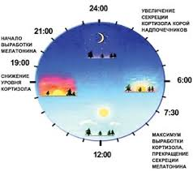

Правильный режим дня
Правильный режим дня, поможет Вам быть более продуктивнее, совершать больше работы, сможете успевать выполнять дела. У большинства взрослых людей режим дня нарушен, кто-то ложится спать ночью, ели просыпаясь утром, кто-то ложится спать вечером, но просыпается ночью, что значит продуктивность последующего дня снижена на нет. Если соблюдать правильный режим дня, вы не только будете хотеть лечь спать во-время, но и вставать будете с бодростью, в полном здравии, с одушевлением.
В умелых руках режим дня — точно откалиброванный механизм, позволяющий наилучшим образом использовать наши ограниченные ресурсы: прежде всего время, которого нам более всего не хватает, а также силу воли, самодисциплину, оптимизм.
Правильный режим дня взрослого человека.
Начнем отсчет времени с раннего утра, когда начинаем вставать на работу, выполнять дела, заниматься утренней зарядкой. Многие в такое время собираются на работу, забыв даже позавтракать.
Раннее утро. 4:00 – 6:00
Ранним утром могут вставать закаленные духом и телом люди, которые осуществляют пробежку, делают зарядку или гимнастику, принимают контрастный душ. При соблюдении режима дня, встать ранним утром не составит труда и останется время на выполнении творческих задач, рисование, сочинение стихов, музыки, главное не мешайте окружающему Вас обществу, могут не понять.
Утро. 6:00 – 8:00
В такое время встают большое количество людей. Здесь есть ограниченное время на зарядку, гимнастику, посещении ванной комнаты, душа и завтрак. Утренний завтрак, должен давать пользу Вам и Вашему организму. К этому делу, необходимо подходить со всей серьезностью, несмотря на его значимость. Многие считают : “Подумаешь завтрак, у меня завтрак кофе и сигарета.” – таким и хочется ответить: “А Вы пробовали на завтрак яичницу со свежем выжатым апельсиновым соком?”. Отказ от курения и алкоголя, должен стоять на первом месте, чем отказ от утреннего завтрака.

Первая половина дня. 8:00 – 12:00
Самое время для продуктивной работы. После утренней зарядки и здорового завтрака, появляется огромная энергия и сила, для выполнения важных дел. Активность мозга в данное время на высоте, можете создавать проекты, выполнять самые важные задания, осуществлять больше операций, рутинную работу отложите на вторую половину дня.
Время перерыва, обед. 12:00 – 14:00
После насыщенной работы, самое время осуществить перерыв и пообедать. Здесь можно принимать тяжелую пищу: супы, мясо, рыбу, жаренное и варенное. Здоровый, плотный обед придаст энергии на следующую половину дня. В обеденный перерыв работу стоит отложить, мы должны удовлетворить голод и сделать небольшой перерыв, так как активность мозга и тела пойдет на спад. Пользы от Вашей деятельности организма мала, он сосредоточен на пищеварении, получение питательных веществ.
Вторая половина дня. 14:00 – 18:00
Данное время подходит для насыщенной работы, можно выполнять рутинные дела. Самая основная энергия была в первой половине дня, как во второй она идет на спад. В данное время бодрости и сил хватает, только пик происходит в первой половине дня. Завершение рабочего времени, готовьтесь к отдыху.
Вечер. 18:00 – 22:00
Вечером лучше заниматься домашними, простыми делами. Поиграть с детьми, почитать книгу, заняться саморазвитием или прогулками. Не стоит в данное время нагружать себя плотной работой, лучше снизить темп, отдыхать или проводить время в спокойной обстановке. Поужинать можно с 6 до 8 вечера, главное не есть за 2 – 3 часа до сна, чтобы Ваш организм в состоянии покоя, сна отдыхал, а не перерабатывал пищу.
Сон. 21:00 – 6:00
Приступать к сну стоит с 9 часов вечера, потому что начинается промежуток здорового и полезного сна. Просыпайтесь на свое усмотрение, если будете ложиться в 9, вы легко встанете в 4 – 5 утра, а если ляжете в 10 – 11, то сможете осуществить еще бодрый подъем к 6 -7 часам утра. Данное время отлично подходит для крепкого, насыщенного и самого полезного сна. Если ложиться позднее, то на утро появиться усталость и вялость.
Правильный режим дня ребенка.
С рождения до 6 месяцев.
Режим дня устанавливает сам ребенок. Кормить стоит по его потребности, будить не рекомендуется. Как правило ребенок будет просить кушать, каждые 2 – 3 часа. Соблюдайте прогулки. В холодное время года начинайте гулять по 20 минут 3 раза в день, постепенно увеличивая время прогулки до 1 – 1.5 часов. В теплую погоду стоит осуществлять прогулки от 40 минут до 1 часа 30 минут, 2 -3 раза в день. Если есть возможность гулять больше в теплое время года, уделите этому особое внимание. Прогулки на свежем воздухе очень полезны в любом возрасте, особенно для малышей. А в вечернее время, желательно, проводить водные процедуры, позволяет легче адаптироваться к новому миру и хорошо успокаивает, к тому же малыши любят купаться. Регулярное повторение процедуры формирует у ребенка правильный режим сна, так как начинает осознавать, что все игры подошли к концу.
От 6 месяцев до 1 года.
В этом возрасте у ребенка вырабатывается режим дня, утро начинается в определенное время, а ночью просыпается 1 – 2 раза на кормление. Днем стоит постепенно начинать давать малышу новые продукты, не только грудное молоко или смеси. Кормление в среднем происходит каждые 3 – 4 часа. Время сна уменьшается до 3 раз в день. Не забываем уделять внимание прогулкам, старайтесь гулять, как можно чаще. Именно в этом возрасте ребенок начинает познавать мир вне дома и делать первые шаги. В моменты бодрствования проявляйте заботу не только по уходу, но и в играх, особенно в этом возрасте актуальны игры, развивающие тактильные ощущения или мелкую моторику рук.
С 1 года до 1.5 лет.
Ребенок перестает просыпаться на ночное кормление, Днем спит полноценно 3 часа или по 1.5 часа днем и вечером. Здесь выбор за ребенком, по его самочувствию, вмешиваться в расписание сна не стоит. Стоит гулять минимум по одному часу в день, а лучше полтора, два часа, как правило зимой 1 час, летом 2 часа. К полутора годам ребенок начинает интересоваться едой, которую едят взрослые. Режим питания в среднем по 4 раза в день. Между основными кормлениями давайте фрукты и соки.
От 1.5 лет до 3 лет.
Режим ребенка сформирован, просыпается и засыпает в определенное время. Правильный сон начинается с 9 часов вечера до 7 – 8 часов утра. Остается один дневной сон 1.5 – 2 часа. Питание у ребенка, почти, окончательно формируется и становится, как у взрослого. Прием пищи осуществляется 4 раза: завтрак, обед, полдник и ужин, промежуток должен составлять порядка 4 часов. Прогулки на свежем воздухе сокращать не нужно, гуляя один – два раза в день будет только на пользу, минимум необходимо уделять прогулкам три – четыре раза в неделю.
От 3 лет.
Начинаются посещения садика на постоянной основе, как следствие окончательно формируется режим дня. Расписание дня простое: подъем в 7 часов утра, завтракать не обязательно, потому что, как правило его накормят, посещение ванной комнаты; далее ребенок проводит с 8 часов утра до 4 часов в четком распорядке дня. Завтрак, развивающие игры, прогулка, обед, тихий час, прогулка, полдник, развивающие игры. В разный дет. садах расписание варьируется между играми и прогулками, но как правило 2 раза в день в хорошую погоду, дети прибывают на улице. После детского садика, желательно, уделить ребенку еще один час прогулке, можно сходить в парк, магазин, на детскую площадку или съездить в игровые комплексы. Разнообразие создавать необходимо, хотя бы один раз в неделю. Вечером уделить вниманию развитию ребенка, веселые игры проводить максимум за 2 – 3 часа до сна, ближе к сну спокойные, может, творческие занятия, провести водные процедуры. Продолжительность режима продлевается до сознательного возраста. Правильное воспитание и подход к ребенку, выработает в нем дисциплину, и в сознательном возрасте может продолжать соблюдать свой режим дня, понимая для чего это необходимо.
Обо мне

Елисавета Толмачева
Спортсменка & Активистка
в этом году заканчиваю одиннадцатый класс, но выпускной класс не стал поводом прерывать мою достаточно активную жизнь...
Популярные посты